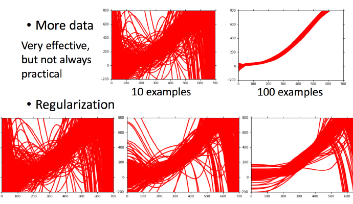

从上节课测试集数据来看，Average Error随着模型复杂增加呈指数上升趋势，更复杂的模型并不能给测试集带来更好的效果。
而这些Error的主要有两个来源，分别是bias（偏差）和variance（方差）。

估测
假设真实的模型为 $\hat f$ ， 如果我们知道 $\hat f$ 模型，那是最好不过了，但是 $\hat f$ 只有 Niamtic 公司才知道。
所以我们只能通过收集 Pokemon精灵 的数据，然后通过 step1~step3 训练得到我们的理想模型 $f^$，$f^$ 其实是 $\hat f$ 的一个预估。
这个过程就像打靶，$\hat f$ 就是我们的靶心，$f^$ 就是我们投掷的结果。如上图所示，$\hat f$ 与 $f^$ 之间蓝色部分的差距就是偏差和方差导致的。
估测变量x的偏差和方差
估测x的偏差
- 假设 $x$ 的平均值是 $\mu$，方差为 $\sigma^2$
评估平均值要怎么做呢？
首先拿到 $N$ 个样本点：${x^1,x^2,···,x^N}$
计算平均值 $m$, 得到
$$
m = \frac{1}{N} \sum_{n} x^n \neq \mu
$$
但是如果计算很多组的 $m$ ，然后求 $m$ 的期望：
$$
E[m]=E\left[\frac{1}{N}\sum x^n\right]=\frac{1}{N}\sum_nE\left[x^n\right]=\mu
$$
这个估计是无偏估计（unbiased）。
然后 $m$ 分布对于 $\mu$ 的离散程度（方差）：
$$
Var[m]=\frac{\sigma^2}{N}
$$
这个取决于 $N$，下图看出 $N$ 越小越离散：
估测变量x的方差
如何估算方差呢？
首先根据前一节计算出来很多个$m$，然后计算每个值对应的$s^2$
$$
s^2 = \frac{1}{N} \sum_{n} \left( x^n - m \right) ^2
$$
而后计算$s^2$的期望值
$$
E\left[ s^2 \right] = \frac{N-1}{N} \sigma^2
$$
说明普遍而言，$s$要比$\sigma$的值小，这是有偏差的估计。
增大$N$的值，那么$s$和$\sigma$之间估测的差距就会变小。

为什么会有很多的模型?
讨论系列02中的案例：这里假设是在平行宇宙中，抓了不同的神奇宝贝
用同一个model，在不同的训练集中找到的 $f^∗$ 就是不一样的
这就像在靶心上射击，进行了很多组（一组多次）。现在需要知道它的散布是怎样的，将100个宇宙中的model画出来
不同的数据集之前什么都有可能发生。
考虑不同模型的方差
一次模型的方差就比较小的，也就是是比较集中，离散程度较小。而5次模型的方差就比较大，同理散布比较广，离散程度较大。
所以用比较简单的模型，方差是比较小的（就像射击的时候每次的时候，每次射击的设置都集中在一个比较小的区域内）。如果用了复杂的模型，方差就很大，散布比较开。
这也是因为简单的模型受到不同训练集的影响是比较小的。
考虑不同模型的偏差
这里没办法知道真正的 $\hat{f}$，所以假设图中的那条黑色曲线为真正的 $\hat{f}$
结果可视化，一次平均的 $\bar{f}$ 没有5次的好，虽然5次的整体结果离散程度很高。
一次模型的偏差比较大，而复杂的5次模型，偏差就比较小。
直观的解释：简单的模型函数集的space比较小，所以可能space里面就没有包含靶心，肯定射不中。而复杂的模型函数集的space比较大，可能就包含的靶心，只是没有办法找到确切的靶心在哪，但足够多的，就可能得到真正的function。
偏差v.s.方差

将系列02中的误差拆分为偏差和方差。
- 简单模型（左边）是偏差比较大造成的误差，这种情况叫做欠拟合。
- 复杂模型（右边）是方差过大造成的误差，这种情况叫做过拟合。
怎么判断？
分析

如果模型没有很好的训练训练集，就是偏差过大，也就是欠拟合。
如果模型很好的训练训练集，即再训练集上得到很小的错误，但在测试集上得到大的错误，这意味着模型可能是方差比较大，就是过拟合。
对于欠拟合和过拟合，是用不同的方式来处理的
偏差大-欠拟合
此时应该重新设计模型。因为之前的函数集里面可能根本没有包含$f^*$。可以：
- 将更多的函数加进去，比如考虑高度重量，或者HP值等等。
- 考虑更多次幂、更复杂的模型。
- 如果此时强行再收集更多的data去训练，这是没有什么帮助的，因为设计的函数集本身就不好，再找更多的训练集也不会更好。
方差大-过拟合
- 简单粗暴的方法：更多的数据
但是很多时候不一定能做到收集更多的data，可以针对对问题的理解对数据集做调整。
比如识别手写数字的时候，偏转角度的数据集不够，那就将正常的数据集左转15度，右转15度，类似这样的处理。
- 正则化
可能伤害偏差，让Model中不包含理想模型，所以要权衡。

模型选择
现在在偏差和方差之间就需要一个权衡，想选择的模型，可以平衡偏差和方差产生的错误，使得总错误最小。
但是下面这件事最好不要做：
用训练集训练不同的模型，然后在测试集上比较错误，模型3的错误比较小，就认为模型3好。但实际上这只是你手上的测试集，真正完整的测试集并没有。比如在已有的测试集上错误是0.5，但有条件收集到更多的测试集后通常得到的错误都是大于0.5的。
交叉验证

图中public的测试集是已有的，private是没有的，不知道的。
交叉验证就是将训练集再分为两部分，一部分作为训练集，一部分作为验证集。
用训练集训练模型，然后再验证集上比较，确实出最好的模型之后（比如模型3），再用全部的训练集训练模型3，然后再用public的测试集进行测试，此时一般得到的错误都是大一些的。
不过此时会比较想再回去调一下参数，调整模型，让在public的测试集上更好，但不太推荐这样。
上述方法可能会担心将训练集拆分的时候分的效果比较差怎么办，可以用下面的方法。
N-折交叉验证
将训练集分成N份，比如分成3份。

比如在三份中训练结果Average错误是模型1最好，再用全部训练集训练模型1。